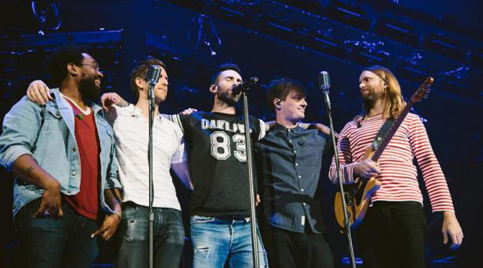
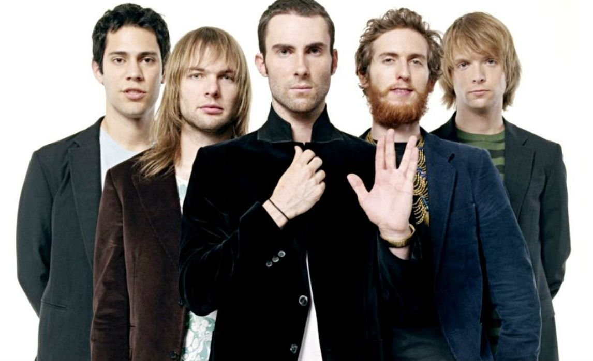
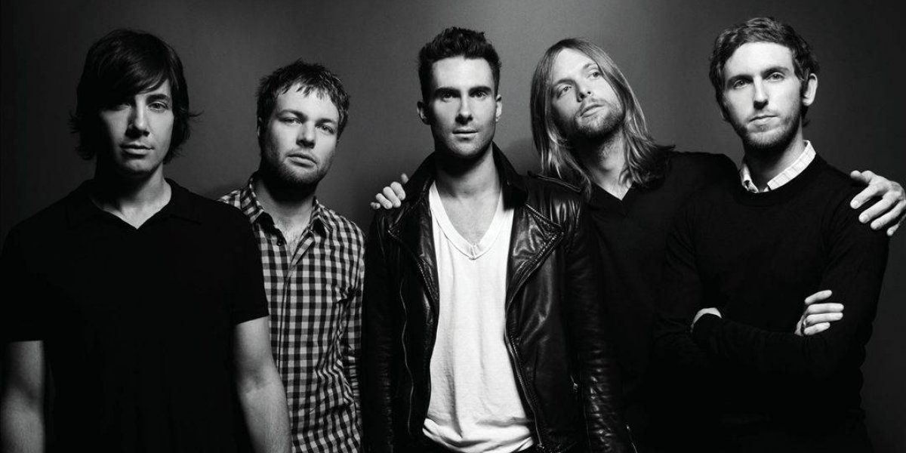
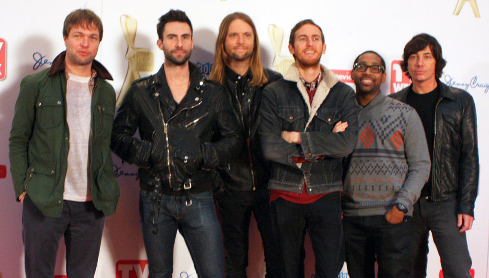
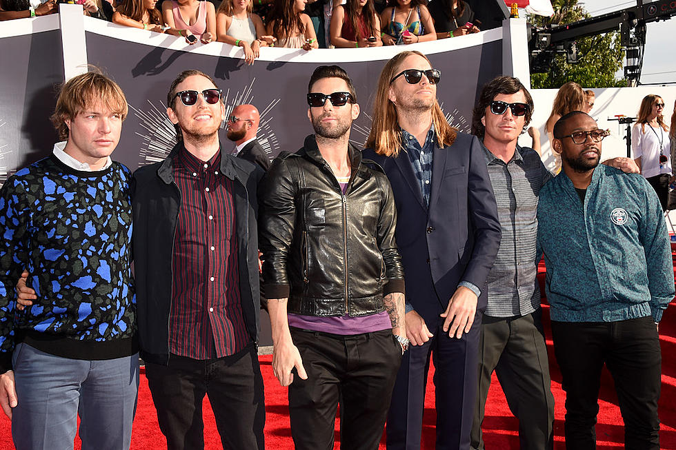

Maroon 5 version en dispositivo movil
Mi idolo





Biografia
Estilo-Musical
Miembros
Discografia
Premios
Adam Noah Levine
18 de marzo de 1979
Lugar en la banda: Cantante, compositor y guitarrista.
Es considerado uno de los hombres más sexies del mundo.
James Burgon Valentine
5 de octubre de 1978
Lugar en la banda: Guitarrista principal.
Es miembro de otra banda llamada JJAMZ, la cual la considera un escape de sus relaciones y su otra banda.
James Royal Carmichael
2 de abril de 1979
Lugar en la banda: Tecladista, pianista y guitarrista.
Se retiró temporalmente de Maroon 5 en marzo de este año para concentrase en sus estudios de música y su sanación espiritual.
Michael Allen Madden.
13 de mayo de 1979
Lugar en la banda: Bajista.
Sus principales influencias son Victor Wooten y Marcus Miller.
Matthew Flynn.
23 de mayo de 1970
Lugar en la banda: Baterista.
Tiene dos hijos.